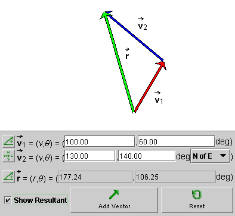
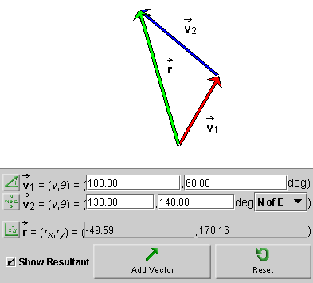
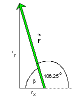

Prerequisites
Students should understand the vector properties of magnitude and direction and be familiar with adding vectors graphically by the Tip-to-Tail method. They also should have a working knowledge of basic trigonometry.
Learning Outcomes
Students will learn to calculate the magnitude and direction of the sum of two vectors (resultant) given the magnitudes and directions of the two vectors to be added. They will learn to use the law of cosines and the law of sines for this purpose. They will also learn how to calculate the sum of two vectors using components.
Instructions
Students should know how the applet functions, as described in Help and ShowMe.
The applet should be open. The step-by-step instructions in the following text are to be done in the applet. You may need to toggle back and forth between instructions and applet if your screen space is limited.
 Calculating With Magnitudes and Directions
Calculating With Magnitudes and Directions
 Appendix
Appendix
Reset  the applet.
the applet.
Enter first one vector and then another. For the first vector,
 1, enter a magnitude of
100 and an angle θ =
60o using the Polar (positive) mode. This is the same
as entering an angle of 60o N of E in the Navigational
mode.
1, enter a magnitude of
100 and an angle θ =
60o using the Polar (positive) mode. This is the same
as entering an angle of 60o N of E in the Navigational
mode.
For the second vector, 2, enter a magnitude of 130 and an angle
of 140o in the Polar (positive) mode, which is the same
as 140o N of E in the Navigational mode.
After entering the two vectors, click the radio button labeled "Show Resultant" to display the resultant (sum of the vectors). If you use the Polar (positive) mode for the resultant, you should see a display like that in Figure 1 below.

Figure 1
The graphical construction of the resultant in Figure 1 uses the Tip-to-Tail Method.
Click the Mode toggle button for the resultant  three times to cycle to the Cartesian mode. In this mode, the
resultant's x and y components
(rx,ry) are displayed, as shown
in Figure 2 below.
three times to cycle to the Cartesian mode. In this mode, the
resultant's x and y components
(rx,ry) are displayed, as shown
in Figure 2 below.

Figure 2
We will now calculate the resultant's magnitude and direction as shown in Figure 1 and its x and y components as shown in Figure 2.

Calculating With Magnitudes and Directions
To calculate the magnitude and direction of the resultant as displayed in Figure 1, we need to first of all draw a diagram showing all relevant quantities. Such a diagram is displayed in Figure 3 below.

Figure 3
We want to calculate the magnitude r of the resultant
and the angle α. The direction angle θ
of the resultant in the Polar (positive)
specification is then θ = α + 60o.
We will use the law of cosines to calculate r and the law of sines to calculate α. For a statement of these laws, follow the links to the end of this lesson.
Using Figure 3, the law of cosines gives for the square of the
magnitude r of vector the
equation
r2 =
v12 + v22
- 2v1v2 cos
100o  (1)
(1)
r2 = 1002 +
1302 - 2x100x130 cos 100o = 31,414.85. (2)
(2)
Note that the angle opposite to vector is equal to 60 + 40 = 100o.
Taking the square root of both sides of Equation (2) gives
r = 177.24 . (3)
(3)
In applying the law of sines to calculate α, we pair the angle α with the opposite side of magnitude v2 and the 100o-angle with the opposite side of magnitude r. This results in the equation
(sin α)/v2 = (sin
100o)/r  (4)
(4)
sin α =
(v2/r) sin 100o = (130/177.24)
sin 100o = 0.722326 .  (5)
(5)
α = 46.25o
 and
and  θ
= 46.25 + 60 = 106.25o .
θ
= 46.25 + 60 = 106.25o .  (6)
(6)
Calculating With Components
For the following calculations, you will need to know (scalar) components of a vector. Fortunately, what is needed here is easy to learn. There is a crash course on Components at the end of the lesson that covers what you need.
We will now calculate the sum of the same two vectors 1 and 2 as in the preceding section, but this
time using components.
It is particularly easy if the vectors are already given in terms of their (x,y) components, (vx,vy)1 and (vx,vy)2. However, let's assume the vectors are given in terms of their magnitudes v1 and v2 and direction angles θ1 and θ2, where the angles are measured relative to the positive x-axis in the positive sense. (This is the Polar-positive mode or, equivalently, the Navigational N-of-E mode.) The two vectors are specified in this way in Figure 2 above, which is reproduced once more below as Figure 4.
Figure 4
The magnitudes and directions of 1 and 2 are
v1 = 100,  θ1 =
60o
θ1 =
60o  (7)
(7)
v2 = 130,  θ2 =
140o
θ2 =
140o  (8)
(8)
Their components are equal to
vx,1 = 100 cos 60o =
50.00,  vy,1 = 100 sin 60o = 86.60
vy,1 = 100 sin 60o = 86.60  (9)
(9)
vx,2 = 130 cos 140o =
-99.59,  vy,2 = 130 sin 140o = 83.56
vy,2 = 130 sin 140o = 83.56  (10)
(10)
Now all we have to do to add the two vectors is to add the
respective components. If the components of the resultant are denoted
(rx,ry), we get
rx = vx,1 +
vx,2 = 50.00 - 99.59 = -49.59  (11)
(11)
ry = vy,1 +
vy,2 = 86.60 + 83.56 = 170.16  (12)
(12)
These are the values displayed in Figure 4.
It is perfectly alright to specify the resultant in terms of its components (11) and (12) and stop the calculation at this point. However, if the magnitude and direction angle of the resultant are required, one can calculate these from the components as follows.
Again, a diagram as in Figure 5 below illustrating the angles and other relevant quantities is very helpful.

Figure 5
The triangle formed by the vector and the two components is a right-angle triangle,
with the vector as the hypotenuse. The Pythagorean
theorem gives for the square of the magnitude r of the
vector the equation
r2 =
rx2 + ry2
= 49.592 + 170.162 = 31,413.59 . (13)
(13)
Taking the square root gives
r = 177.24 . (14)
(14)
This confirms result (3) obtained earlier.
From Figure 5 we can see that
tan β =
|ry|/|rx| = 170.16/49.59 =
3.4313  (15)
(15)
β = 73.75o
. (16)
(16)
This implies for the direction angle of the value
180 - 73.75 = 106.24o . (17)
(17)
which is the value obtained earlier as result (6) and which is also illustrated in Figure 5.
One has two options if the two vectors 1 and 2 are given in polar form, i.e., in terms
of magnitude and direction, and one wants to calculate the resultant again in polar
form. One can do the calculation using components. This involves
converting the vectors to component form, then adding
the components (which is easy), and then converting the result back to
component form. In the other option, which may be a bit less work, one uses
the law of cosines and the law of sines.
However, if the two vectors 1 and 2 are already given in component form and
if one wants the resultant in component form as well, as will often
be the case, the calculation is a cinch.
>>>>> Appendix <<<<<
The law of cosines is a general equation relating three sides and one angle in a triangle. There are no restrictions on the triangle's shape. Three elements determine a triangle. If any three of the four elements in the law-of-cosines equation are given, the equation allows you to calculate the fourth one.
The diagram in Figure 6 below illustrates a general triangle. The three sides are labeled a, b, c, and the three angles are labeled α, β, γ.

Figure 6
There are three law-of-cosines equations, depending on which angle is included:
c2 = a2 +
b2 - 2ab cos γ
 (18a)
(18a)
a2 = b2 +
c2 - 2bc cos α
 (18b)
(18b)
b2 = c2 +
a2 - 2ca cos β .
 (18c)
(18c)
Note that the Pythagorean theorem is a special case of these equations, if one of the angles is equal to 90o. E.g., if γ = 90o, then cos γ = 0 and Equation (18a) reduces to the Pythagorean theorem,
c2 = a2 +
b2 .  (19)
(19)
Also note the minus sign in front of the cosine term in these equations. This has the following effect. Let's consider Equation (18a). If γ < 90o, the cosine is positive. With the minus sign in front of the cosine term, Equation (18a) therefore gives a value for c that is less than the value given by the Pythagorean theorem (19). If γ > 90o, the cosine is negative. Combined with the minus sign in front of the cosine term, the term now makes a posiitive contribution to the right-hand side of Equation (18a) yielding a value of c that is greater than the one given by the Pythagorean theorem.
The law of sines is a set of equations true for any triangle. It states that the ratio "sine of an angle divided by the length of the opposite side" is the same for any pair of angle and opposite side.
The diagram in Figure 7 below illustrates a general triangle. The three sides are labeled a, b, c, and the three angles are labeled α, β, γ.
Figure 7
The law-of-sines equations are
(sin α)/a =
(sin β)/b = (sin γ)/c .
 (20)
(20)
A triangle is determined by three of its elements. If you are given two sides and an angle opposite to one of the sides, the law of sines lets you to determine the angle opposite to the other side.
Vectors can be described in terms of their scalar components. A
vector in two dimensions has two scalar components, one along the
x-axis and one along the y-axis. For a vector  , these components are denoted
ax and ay, respectively. Figure 8
below illustrates the components for a vector that is in the first quadrant.
, these components are denoted
ax and ay, respectively. Figure 8
below illustrates the components for a vector that is in the first quadrant.

Figure 8
The scalar components of a vector are the vector's projections onto the x and y axes. In Figure 8, they are shown in green and yellow, respectively. They are called scalar components because they are numbers. The scalar components are equal to the x and y coordinates of the tip of the vector if the tail end of the vector is at the origin of the coordinate system, as it is here.
The vector in Figure 8 has a magnitude of 8 and an angle θ with the positive x-axis equal to 30o. Its scalar components have the values
ax = 6.93,  ay = 4.00
ay = 4.00  (21)
(21)
For vectors in the first quadrant, both components are positive, but for vectors in one of the other three quadrants one or both components are negative. E.g., for a vector in the second quadrant, the x-component is negative while the y-component is still positive.
The definition of the sine and cosine imply that
ax = a cos θ,
 ay = a sin θ.
ay = a sin θ.
 (22)
(22)
Substituting a = 8.00 and θ = 30.0o into these equations, gives the values listed in Equations (21) and illustrated in Figure 8.
Note that Equations (22) are correct even if the vector is in the second, third or fourth
quadrant. No signs need to be changed. Any sign changes are
automatically taken care of by the signs of the cosine and sine
functions for values of θ in any of these
other quadrants.